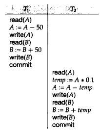
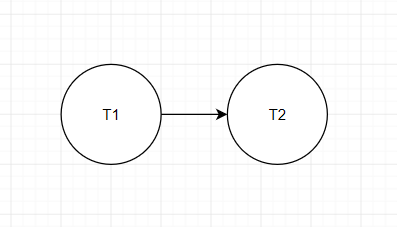

锁
确保隔离性的方法之一就是对数据项的访问以互斥的方式进行。
实现这种需求的方法是只允许事务访问该事务持有锁的数据
事务是构成单一逻辑工作的一系列操作的集合
事务具有以下特性：
事务处于以下状态之一：

回滚：
如果强制事务串行地执行，那么很容易就能保持一致性，而并发很可能违背隔离性。
如果在并发执行中，我们能保证所执行的任何调度的效果都跟没有并发执行的调度效果一样，就可以确保数据库的一致性。
这种调度称为可串行化调度
调度：指令在系统中执行的时间顺序
串行调度：同一事务的各个指令紧挨在一起（执行完一个事务再执行下一个事务),如下图的调度$S$

冲突：如果指令$I$和$J$是在相同的数据上操作，并且其中至少有一个是写操作，则称$I$和$J$是冲突的
冲突等价：如果调度$S$经过一些列非冲突指令交换转换成$S’$，则称$S$和$S’$冲突等价
冲突可串行化：如果调度$S$与一个串行调度冲突等价，则称$S$是冲突可串行化的
构造优先图$G = (V, E)$, $V$是顶点集，$E$是边集
边集由满足下列三个条件之一的$T_i \rightarrow T_j$组成：
例如，对于上面的调度$S$，它的优先图是

如果一个调度的优先图没有环，则该调度是冲突可串行化，否则不是
当并发执行中事务发生故障，有些调度不能恢复。
例如下图的调度
如果T6在T7提交后发生故障，需要回滚；
而T7读取了T6写入的数据（我们可以说T7依赖于T6），也需要中止；
但T7已经提交了，无法中止。
这样的调度是不可恢复调度
可恢复调度应该满足：对于每对事务T1和T2，如果T2读取了之前由T1写入的数据，那么T1应该先于T2提交。
即使一个调度是可恢复的，如果多对事务之间存在依赖关系，可能引发级联回滚，导致大量的撤销工作。
无级联调度应该满足:对于每对事务T1和T2，如果T2读取了之前由T1写入的数据，那么T1应该在T2这一读操作之前提交
隔离性级别由高到低由：
我们可以通过多种并发控制机制来实现事务的隔离性级别
值传递会将实参拷贝一份副本作为局部变量传进函数，在函数内修改该副本不会改变原来实参的值
指针传递本质上也是值传递，只是传递的值是指针变量存储的地址值。修改该地址值指向的变量可以修改变量的值
形参相当于实参的别名，对形参的操作就是对实参的操作。
1 |
|
指针本质是一个变量，在逻辑上时独立的，引用时某个变量的别名，在逻辑上依附与某个变量，在定义引用时必须初始化
1 | int a = 2019; |
sizeof(引用)得到的时引用变量的大小，sizeof(指针)得到的时指针变量的大小
1 | int a = 2019; |
编译时指针在符号表对应的地址值时指针变量的地址值，引用对用的是引用对象的地址值
树是$n$个结点的有限集。在任意一颗非空树中：
结点拥有的子树数称为结点的度
度为$0$的结点称为叶子结点
除了根结点和叶子结点外的其他结点称为内部结点
根为第一层，根的孩子为第二层。
若某结点在第$i$层，则其孩子在第$i + 1$层
树中结点的最大层次称为树的深度或高度
##
忘记deletenew和delete应该配套使用
释放数组没有使用delete[]
双指针释放错误
正确释放方法如下
1 | char** p; |
基类的析构函数没有定义为虚函数
如果基类的析构函数不是虚函数，当基类指针指向子类时，子类的资源不能正确释放
1 | inline int sum(int a, int b){ |
在函数体前加上inline关键字可以将函数设置为内联函数。
在编译时，编译器会将调用内联函数的地方替换成内联函数体。
内联函数的作用是用空间换时间，牺牲一定的内存来节省函数调用的开销。
inline关键字只是对编译器的一种建议，被inline修饰的函数不一定被内联。如果函数体过大，编译器会放弃内联而把代码当成普通函数之前讨论的几种管理方式都具有一下两种特征：
为此，可以采用虚存技术，使得在进程运行时并不需要所有页（段）都在内存中，只在需要的时候读取页（段）。
虚拟内存的实现需要一定的硬件支持，一般包括：
请求分页管理方式在基本分页管理方式的基础上增加了请求调页功能和页面置换功能。
这是目前最常用的一种实现虚拟存储器的方法
每当要访问的页面不在内存中时，就产生一次缺页中断。
将内存分为系统区和用户区。系统区供操作系统使用，处于低地址。用户区是除了系统区外的内存空间。
优点
缺点
最简单的多道程序存储管理方式。
将内存划分成若干个固定大小的区域，区域大小可以相等或者按规则递增，每个区域只能放入一个程序。
为了方便内存分配，需要一张分区说明表，每行记录分区的大小、起始地址和分配状态。分配内存时查找该表寻找合适的分区，如果没找到则不分配内存
优点
缺点
目前基本没有操作系统使用固定分区的方法
不预先划分内存，而是在进程装入内存时根据进程的大小动态建立分区，使得分区大小刚好适合进程大小
缺点
如果同时又多个空闲块满足要求，需要采用一定的分配策略来决定分配哪一块
好的程度：首次适应>邻近适应>最佳适应>最坏适应
以上三种分区管理方式的共同点是用户进程在主存中都是连续存储的
不可能将所有的进程和所需的资源全都放入内存，所以需要操作系统对内存进行合理的划分和动态管理。
将源程序转换为可以在内存中执行的进程有以下3步：
按照链接的时机不同，可以分成：
每个目标模块从0开始编址，这些相对地址即逻辑地址；
物理地址是内存中物理单元的真实地址；
将逻辑地址转换为物理地址称为地址重定位
内存保护有两种方法：
程序运行时不可能每时每刻都用到程序和数据的所有部分，所以我们可以把经常访问的部分放在固定区，其它的按照调用关系分段，要用的时候再调入覆盖区
交换有两个基本操作：
覆盖主要用于同一个程序，交换用于不同的进程